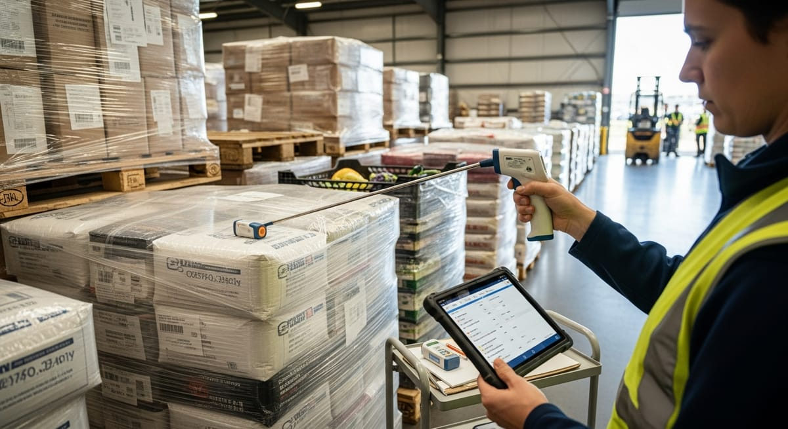

Inspección de recepción de materia prima

Inspección de recepción de materia prima
La inspección de recepción de materia prima es uno de los controles más críticos en cualquier industria agroalimentaria. Es el primer filtro de calidad y seguridad antes de que cualquier ingrediente o material entre en el proceso productivo. Un fallo en esta fase puede comprometer toda la cadena: desde la seguridad del producto final hasta la satisfacción del cliente y el cumplimiento normativo. Si el control en recepción es sólido, los problemas aguas abajo se reducen de forma significativa. Si es débil o inconsistente, las consecuencias pueden ser costosas y difíciles de gestionar.
En este artículo repasamos los puntos clave que todo responsable de calidad debe tener controlados: qué se comprueba en la recepción, qué documentos deben acompañar al lote, cómo gestionar un lote no conforme sin parar la producción y cómo registrar la recepción para garantizar la trazabilidad.
Qué se comprueba en la inspección de recepción de materia prima y con qué criterio se acepta o rechaza un lote
Al recibir una materia prima, el equipo de calidad debe evaluar una serie de parámetros que pueden agruparse en tres grandes bloques: condiciones organolépticas y físicas, condiciones de transporte y temperatura, y conformidad documental.
En cuanto a las condiciones físicas y organolépticas, se revisa el estado del envase o embalaje (integridad, ausencia de golpes, humedad o contaminación visible), el aspecto, color, olor y textura del producto cuando procede, y la presencia de cuerpos extraños o plagas. Estos controles se realizan de forma visual y, en algunos casos, con apoyo de instrumentos como termómetros, medidores de pH o refractómetros.
Para decidir si un lote se acepta o se rechaza, es imprescindible contar con criterios de aceptación previamente definidos en las fichas técnicas de cada materia prima. Estos criterios deben establecer límites claros: temperatura máxima de recepción para productos refrigerados o congelados, rangos de pH aceptables, ausencia de determinados microorganismos, etc. Sin criterios predefinidos, la decisión queda a la interpretación subjetiva del operario, lo que genera inconsistencias y riesgos.
Tal y como establece el Reglamento (CE) 852/2004 relativo a la higiene de los productos alimenticios (Reglamento [CE] 852/2004, 2004), los operadores de empresa alimentaria deben aplicar procedimientos basados en los principios APPCC, lo que incluye controlar los puntos críticos desde la recepción de materias primas. Esto refuerza la necesidad de que la inspección en recepción esté integrada en el sistema de gestión de la seguridad alimentaria de la empresa, no tratarse como un trámite administrativo.
Un buen recurso para profundizar en este concepto es el glosario de inspección de recepción de Solved, donde encontrarás definiciones y ejemplos prácticos aplicados al sector agroalimentario.
Documentación que debe acompañar al lote: certificado de análisis, ficha técnica y temperatura
Una materia prima no puede considerarse conforme solo por tener buen aspecto. La documentación que acompaña al lote es igualmente parte del control de recepción y, en muchos casos, es la primera señal de alerta ante posibles problemas.
Los documentos mínimos que deben revisarse en cada recepción son:
- Albarán de entrega: identifica el lote, la cantidad, el proveedor y las condiciones de entrega pactadas.
- Ficha técnica del producto: describe las especificaciones del producto y los criterios que debe cumplir. Debe estar actualizada y acordada con el proveedor.
- Certificado de análisis (CoA): documento emitido por el proveedor o por un laboratorio acreditado que confirma que el lote cumple los parámetros analíticos especificados. Su revisión es obligatoria para materias primas con riesgo microbiológico o alergénico.
- Registro de temperatura durante el transporte: fundamental para productos que requieren cadena de frío. Puede venir en forma de gráfico de temperatura o como ticket de un registrador de datos.
- Declaración de conformidad o certificados de proveedor: como certificaciones de producto ecológico, sin gluten, kosher, halal, etc., cuando sean relevantes para el uso del producto.
Revisar esta documentación en el momento de la recepción permite detectar desviaciones antes de que el producto entre en almacén. Si el certificado de análisis no llega junto al lote, lo recomendable es retener el lote en cuarentena hasta recibirlo, en lugar de liberarlo por defecto.
Para mejorar el control sobre los proveedores y reducir las sorpresas en recepción, es útil complementar este proceso con una estrategia de control de calidad de proveedores que permita anticiparse a los fallos antes de que lleguen a tu planta.
Qué hacer con un lote no conforme sin frenar la producción
Uno de los mayores retos del responsable de calidad es gestionar un lote no conforme sin generar un cuello de botella en la línea de producción. La presión operativa puede llevar a liberar lotes que no cumplen, y eso es precisamente lo que hay que evitar.
El primer paso ante un lote no conforme es la cuarentena física inmediata: separar el material sospechoso o rechazado del resto de materias primas y señalizarlo claramente para que no sea usado por error. En entornos digitales, este bloqueo puede hacerse directamente en el sistema de gestión, asociando el estado “en cuarentena” o “rechazado” al número de lote correspondiente.
A continuación, se debe abrir una no conformidad documentada, con descripción del problema, evidencias (fotos, datos de temperatura, resultados analíticos) y referencia al proveedor y al lote afectado. Esta no conformidad es la base para la gestión con el proveedor: reclamación, sustitución del lote, solicitud de nuevo certificado de análisis o inicio de un proceso de baja de proveedor si el fallo es recurrente.
Si la producción necesita continuar, hay varias opciones según el caso: usar material alternativo previamente aprobado, activar un plan de contingencia con otro proveedor homologado, o en casos justificados, liberar el lote de forma condicional bajo autorización del responsable de calidad mientras se completan las verificaciones pendientes, dejando siempre constancia escrita de la decisión y sus condicionantes.
Lo importante es que ninguna de estas decisiones se tome de forma verbal o informal. Todo debe quedar registrado.
Cómo dejar registrada la recepción y enlazarla con la trazabilidad del lote
El registro de la recepción no es solo un requisito documental: es la pieza que conecta la inspección de materias primas con la trazabilidad del producto terminado. Sin este enlace, en caso de alerta alimentaria o reclamación, sería imposible identificar qué lotes de materia prima se usaron en cada producción y, por tanto, qué productos finales podrían estar afectados.
Un registro de recepción completo debe incluir, como mínimo: fecha y hora de recepción, proveedor, número de lote del proveedor, cantidad recibida, resultado de la inspección (aceptado, rechazado, en cuarentena), parámetros verificados y firma del responsable. A este registro se deben adjuntar los documentos recibidos: albarán, certificado de análisis y registro de temperatura.
El paso siguiente es asignar un número de lote interno que permita seguir ese material a lo largo del proceso: desde el almacén hasta la línea de producción, y desde la línea hasta el producto terminado y su expedición. Esto es lo que se conoce como trazabilidad de lote, un requisito exigible en toda la cadena alimentaria europea.
El Reglamento (CE) 178/2002 por el que se establecen los principios y requisitos generales de la legislación alimentaria (Reglamento [CE] 178/2002, 2002) establece la obligatoriedad de la trazabilidad en todas las etapas de la cadena alimentaria, incluyendo la recepción de materias primas. Esto significa que el registro de recepción no es una opción: es una obligación legal.
Cuando estos registros se gestionan en papel, el riesgo de pérdida de información, errores o lentitud en la consulta es alto. Un software de calidad agroalimentaria permite digitalizar todo el proceso: registrar la recepción desde una tablet o PC, adjuntar documentos, asignar lotes internos automáticamente y vincular cada lote de materia prima con los productos en los que se ha utilizado. Esto convierte la inspección de recepción en un activo de trazabilidad real, no en un trámite burocrático.
En definitiva, una inspección de recepción de materia prima bien ejecutada protege la seguridad alimentaria, mejora la relación con los proveedores y garantiza que, ante cualquier incidencia, la empresa puede actuar con rapidez y rigor. La clave está en tener criterios claros, documentación en orden y registros digitales que conecten cada lote con el producto final.
Referencias
- Reglamento (CE) n.o 178/2002 del Parlamento Europeo y del Consejo, de 28 de enero de 2002, por el que se establecen los principios y los requisitos generales de la legislacion alimentaria. (2002). https://eur-lex.europa.eu/eli/reg/2002/178/oj?locale=es
- Reglamento (CE) n.o 852/2004 del Parlamento Europeo y del Consejo, de 29 de abril de 2004, relativo a la higiene de los productos alimenticios. (2004). https://eur-lex.europa.eu/eli/reg/2004/852/oj?locale=es